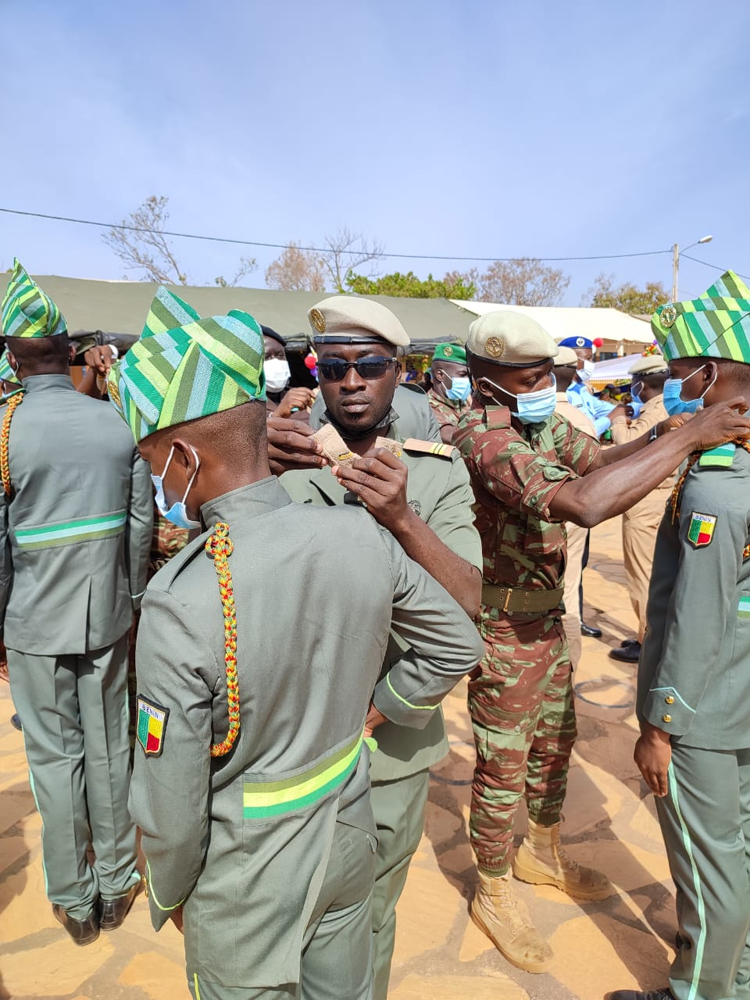
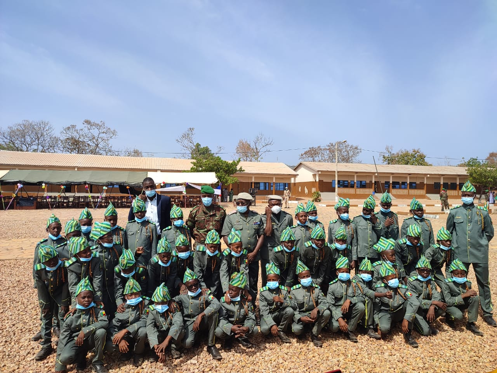
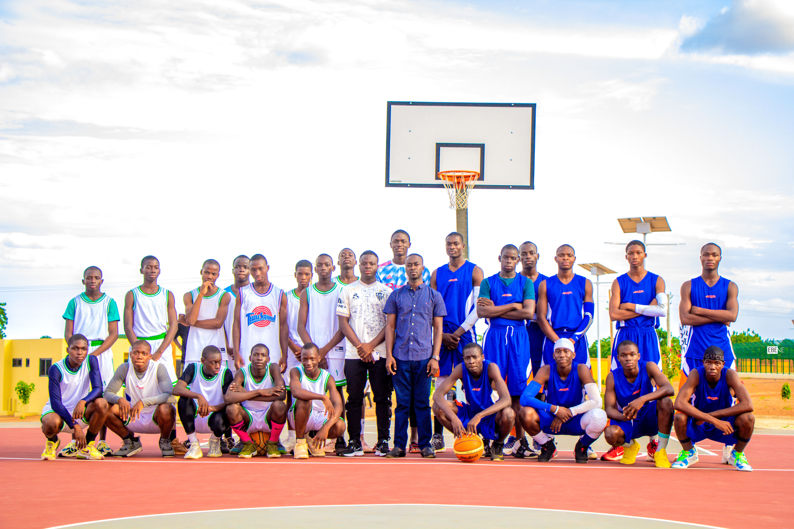
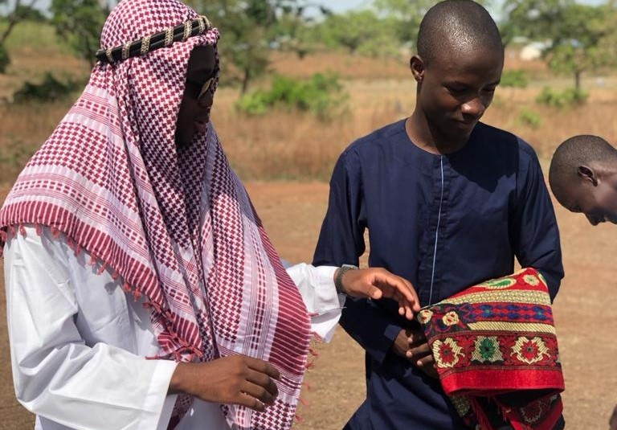

Une des choses qui font la beauté de l'Armée, est la cérémonie ou mieux, le cérémonial militaire. Le PMB, étant une composante des écoles des Forces Amées Béninoises, n'en est pas epargné. Le Prytanée Militaire de Bembérèkè, à l'instar de sa participation à la parade militaire du 1er Août pour la célébration de la fête nationale, organise en son sein d'autres cérémonies. Il s'agit en général de la cérémonie de réception des jeunes de la 6ème dans la grande famille des Enfants de Troupe, du port de galons aux majors de classe, de la cérémonie de prise d'arme et autres .... .
Le Prytanée Militaire de Bembéréké est une école d'excellence des Forces Amées Béninoises donc prend aussi part au défilé du 1er Août.
Il y prend part avec son homologue, le Lycée Militaire de Jeunes Filles Général Mathieu Kérékou de Natitingou .Il faut noter que la tenue de cérémonie des E.T a subi plusieurs modifications avant cette dernière.
Les Enfants de Troupe du PMB exécutent au cours de cette parade, la marche française, au rythme de la musique de la
Police Républicaine. Ils sont en seul peleton tout comme le LMJF - GMK et passent après le peleton des anciens
combattants. et sont suivis des Enfants de Troupe du LMJF-GMK.

La cérémonie de port d’attributs aux jeunes de la 6ème marque la fin de leur période de bleuissement et
annonce leur intégration dans la grande famille des Enfants de Troupe. En effet, ils subissent pendant une période de
2 semaines à un mois environ, le bleuissement de leurs anciens des classes de 5ème, 2nde, 1ère et Tle sous la supervision
des officiers et sous-officiers. Après leur avoir inculqué pendant cette période les qualités d’un Enfant de Troupe, une
cérémonie est organisée en leur hommage.
Cette cérémonie met deux classes en exergue, celle de la 6ème et celle des Terminales car les
jeunes reçoivent les attributs de leur aînés des classes de Terminales. Au cours de la cérémonie le doyen des E.T, le
Chef de Corps, et le représentant des bleus de la 6ème font leurs allocutions. Ensuite le représentant remet son
allocution au doyen des E.T. Les classes de terminale rejoignent les jeunes et leurs portent leurs attributs. Les nouveaux
Enfants de Troupe ainsi nés, prêtent leur serment en devant leurs anciens et les cadres civils comme militaires et leurs
et s’engagent à le respecter.

Nous, Enfants de Troupe de la Xème promotion, nous nous engageons officiellement et solennellement à respecter le règlement intérieur de Prytanée; Respecter à la lettre les ordres des anciens et des gradés; être ponctuels à tous les rassemblements ayant lieu dans l'enceinte de l'établissement. A l'intérieur qu'à l'extérieur de l'école, honorer le Prytanée où que nous soyons.
Le Prytanée Militaire offre aux E.T bien plus que la formation académique et militaire. Le PMB dispose de terrain de
football, basketball, volleyball et de plusieurs pistes d’athlétisme. Bien que ces terrains ne soient plus trop
praticables, les E.T arrivent à s’y divertir, s’entraîner et se performer dans les disciplines de leurs choix.
Ils organisent chaque année en dépit du manque en outils sportifs, des tournois et championnats de football, de
basketball, ceci pour les juniors et pour les séniors. Un objectif de ces organisations est de cibler en même temps les
meilleures compétences capables de défendre les couleurs du Prytanée à l’externe.
Il s'agit de tournois réels organisés par les anciens , où chaque équipe est formé de panache d'ET du premier et du seconde cycle afin que les chances de gagner de chaque équipes soit égalent , chaque équipe ayant son coach , son maillot , son sponsor . A la fin du tournoi , les prix sont remis aux meilleures équipes et aux meilleurs joueurs.

Il s'agit des matchs organisés entre classes et entre promotion , ce sont des matchs très dynamiques et très amusants , surtout quand les plus jeunes se mettent à fond , cela concourt également à la cohésion entre les promotions .

Nous organisons également des tournois de jeux de sociétés tels que : Dame , Echecs , Scrabble , et plein d'autres jeux , ces jeux sont très souvent organisés entre classe et on sélectionne deux joueurs par classe pour chaque jeu de société , ces tournois sont également très chauds car il faut associer intelligence 💡,rapidité et jeu d'équipe✊ , ces jeux sont également très instructifs et permettent la cohésion également.

La réligion est une chose aussi respectée au Prytanée. Les réligions dominantes au Prytanée sont le CHristianisme et l'Islam. Des permissions sont accordées aux chrétiens et aux musulmans respectivement le dimanche et le vendredi pour partir à la l'églse ou à la mosquée. L'autre chose est que pour les fêtes réligieuses, Tabaski, Ramadan, Pentécôte, Pâques etc.... les chrétiens et les musulmans s'entendent et les organisent à l'enceinte de l'établissement après les prières à l'église ou à la mosquée.
 PMB
PMB